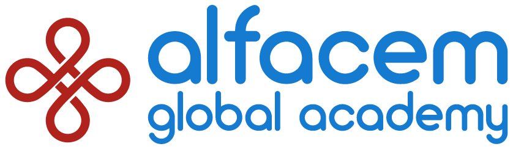

Alfa University Fair
Entre com o e-mail cadastrado. Chega um código de 8 dígitos por e-mail.
Confira os nomes e marque as caixinhas de quem chegou.
Inscrito
Responsáveis
Alfa University Fair
Código
Mostre este QR aos representantes das universidades para que eles guardem o seu contato. Escreva seu nome na credencial em branco e use-a durante o evento.